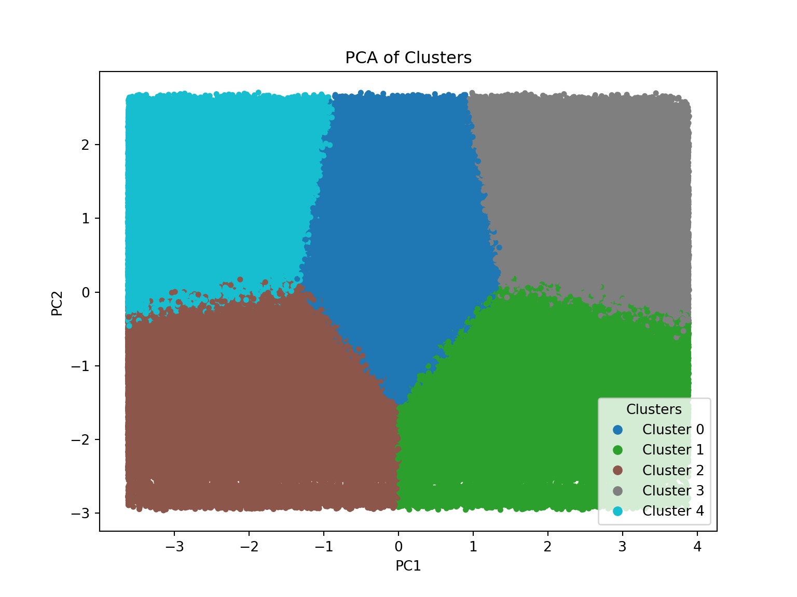

E-Commerce - Creating Customer Clusters
Context
This dataset contains 1,000,000 rows that simulates e-commerce shopping patterns. This data was sourced from Kaggle and uses the following tools: Pandas, Matplotlib, Sickit-learn, KMeans
Approach
My aim is to create customer clusters using KMeans in order to effectively target advertising to the correct demographics to maximise returns. This will be based on variables like age, education level, product views, product types and ad clicks.
Data Importing
I started by importing and exploring the data, checking for completeness and standardisation. I created a function to check for the completeness of a few demographic variables to understand what the data looks like - it looks like we have standardisation in the columns with even spread of values and no anomalous results.
import pandas as pd
import sklearn as sklearn
from sklearn.compose import ColumnTransformer
from sklearn.preprocessing import StandardScaler, OneHotEncoder
from sklearn.cluster import KMeans
from sklearn.decomposition import PCA
import seaborn as sns
import matplotlib.pyplot as plt
p2_data_import = pd.read_csv(r"C:\Users\Matthew.Webb12\Desktop\GitHub Repos\Portfolio\python data\e_commerce_shopper_behaviour_and_lifestyle.csv")
# Exploring the data for completeness with a function
# This dataset is large: 57 x 1,00,000
def variable_counts(column):
counts = p2_data_import[column].value_counts()
formatted_counts = counts.apply(lambda x: f"{x:,}")
percentages = p2_data_import[column].value_counts(normalize=True).mul(100).round(1)
result = pd.concat([formatted_counts, percentages], axis = 1, keys = ['Count', 'Percentage'])
return result
employment_status_table = variable_counts("employment_status")
education_level_table = variable_counts("education_level")
budget_table = variable_counts("budgeting_style") Count Percentage
employment_status
Retired 200,246 20.0
Unemployed 200,225 20.0
Employed 199,988 20.0
Student 199,949 20.0
Self-employed 199,592 20.0 Count Percentage
budgeting_style
Moderate 333,771 33.4
Loose 333,438 33.3
Strict 332,791 33.3 Count Percentage
education_level
Bachelor 299,953 30.0
High School 299,391 29.9
Associate Degree 200,989 20.1
Master 149,699 15.0
PhD 49,968 5.0Creating Clusters
Column Types
Now I want to start creating my customer clusters, first determining the types of the columns, then encoding the categorical variables so they can be quantified by the clustering.
# Dropping the user_id column
p2_data_cleaned = p2_data_import.drop(columns = ["user_id"])
# Separating the columns into numeric and categorical, this is so the KMeans will run correctly
numeric_cols = p2_data_cleaned.select_dtypes(include = ['int64', 'float64']).columns
categorical_cols = p2_data_cleaned.select_dtypes(include = ['object', 'category']).columns<string>:1: Pandas4Warning: For backward compatibility, 'str' dtypes are included by select_dtypes when 'object' dtype is specified. This behavior is deprecated and will be removed in a future version. Explicitly pass 'str' to `include` to select them, or to `exclude` to remove them and silence this warning.
See https://pandas.pydata.org/docs/user_guide/migration-3-strings.html#string-migration-select-dtypes for details on how to write code that works with pandas 2 and 3.# Now I need to scale the numeric columns and encode the categorical columns
# This is so KMeans treats the numeric columns equally and can effectively read the categorical columns
column_encoding = ColumnTransformer(
transformers = [
("num", StandardScaler(), numeric_cols),
("cat", OneHotEncoder(handle_unknown = "ignore"), categorical_cols)
]
)
# Now applying the transformation code to the data
p2_data_transformed = column_encoding.fit_transform(p2_data_cleaned)
# Next I need to determine the most efficient number of clusters using the 'elbow method'
# Creating an empty dictionary to store the values
wcss = []
# Here I've selected the model to test for 2 to 20 clusters and then plot so we can see where the diminishing returns occurs
for k in range(2, 20):
km = KMeans(n_clusters = k, random_state = 123)
km.fit(p2_data_transformed)
wcss.append(km.inertia_)KMeans(n_clusters=19, random_state=123)In a Jupyter environment, please rerun this cell to show the HTML representation or trust the notebook.
On GitHub, the HTML representation is unable to render, please try loading this page with nbviewer.org.
Parameters
# This produces the plot to easily visualise where the drop off is
plt.plot(range(2, 20), wcss, marker = 'o')
plt.xlabel("Number of clusters /k")
plt.xticks(range(2, 20))([<matplotlib.axis.XTick object at 0x00000289BC944B90>, <matplotlib.axis.XTick object at 0x00000289BBD28B00>, <matplotlib.axis.XTick object at 0x00000289BCCB0980>, <matplotlib.axis.XTick object at 0x00000289BD100D10>, <matplotlib.axis.XTick object at 0x00000289BD1016D0>, <matplotlib.axis.XTick object at 0x00000289BCCB37D0>, <matplotlib.axis.XTick object at 0x00000289BD100260>, <matplotlib.axis.XTick object at 0x00000289BD1024B0>, <matplotlib.axis.XTick object at 0x00000289BD102EA0>, <matplotlib.axis.XTick object at 0x00000289BD1037D0>, <matplotlib.axis.XTick object at 0x00000289BD103110>, <matplotlib.axis.XTick object at 0x00000289BD120110>, <matplotlib.axis.XTick object at 0x00000289BD120B00>, <matplotlib.axis.XTick object at 0x00000289BD121520>, <matplotlib.axis.XTick object at 0x00000289BD121EB0>, <matplotlib.axis.XTick object at 0x00000289BCCB2A20>, <matplotlib.axis.XTick object at 0x00000289BD1227B0>, <matplotlib.axis.XTick object at 0x00000289BD123170>], [Text(2, 0, '2'), Text(3, 0, '3'), Text(4, 0, '4'), Text(5, 0, '5'), Text(6, 0, '6'), Text(7, 0, '7'), Text(8, 0, '8'), Text(9, 0, '9'), Text(10, 0, '10'), Text(11, 0, '11'), Text(12, 0, '12'), Text(13, 0, '13'), Text(14, 0, '14'), Text(15, 0, '15'), Text(16, 0, '16'), Text(17, 0, '17'), Text(18, 0, '18'), Text(19, 0, '19')])plt.ylabel("WCSS")
plt.title("Cluster Testing via Elbow Method")
plt.show()
From the above plot 5 clusters is where the gradient starts to become more shallow so I will use 5 clusters in this analysis. So now I need to run a final KMeans clustering.
KMeans(n_clusters=5, random_state=123)In a Jupyter environment, please rerun this cell to show the HTML representation or trust the notebook.
On GitHub, the HTML representation is unable to render, please try loading this page with nbviewer.org.
Parameters
<matplotlib.legend.Legend object at 0x00000289BCAC7CE0>Text(0.5, 1.0, 'PCA of Clusters')Text(0.5, 0, 'PC1')Text(0, 0.5, 'PC2')
Interpretation
This plot tells me some key things about my clustering, the clustering has been effective due to the cluster ‘blobs’ being all similar sizes with distinct customer behaviours in each due to there being minimal overlap. No empty spaces tells me the behaviour differences between the clusters aren’t radically different but vary gradually from one cluster to the next.
Before my final summary I need one more step, adding in a means table and pulling the dominant cluster features from each cluster so I can build a profile for the business to target actions to.
# In order to now interpret the results of this clustering I need to create a means table, and a dominant variance for each cluster list
# Means table
p2_data_clustering_full = p2_data_all_cols.groupby("cluster").mean()
p2_data_clustering_full = p2_data_clustering_full.round(4)
# Dominant variance
dom_cluster_feature = p2_data_clustering_full.copy()
dom_features_per_cluster = {}
for c in dom_cluster_feature.index:
top_features = (
dom_cluster_feature.loc[c]
.sort_values(ascending=False)
.head(15)
*100
)
dom_features_per_cluster[c] = top_features.round(2)
Now I have my cluster profiles I can provide business insights into how to target these clusters effectively, for the sake of space I will only analyse two clusters using some of their most dominant features calculated in the previous step.
Cluster 1
print(dom_features_per_cluster[0])device_type_Mobile 60.21
urban_rural_Urban 50.05
gender_Male 48.09
gender_Female 47.92
age 36.89
budgeting_style_Moderate 33.39
budgeting_style_Strict 33.33
budgeting_style_Loose 33.28
urban_rural_Suburban 30.08
education_level_Bachelor 29.86
device_type_Desktop 29.86
education_level_High School 29.71
shopping_time_of_day_Evening 25.11
shopping_time_of_day_Night 25.03
shopping_time_of_day_Afternoon 24.94
Name: 0, dtype: float64- Split evenly among genders - Use gender neutral ads to maximise engagement
- Predominantly on mobile devices - Provide push-notifications and mobile based deals
- Split evenly among budget types - This point is important, you should use tiered pricing models on products, i.e. low, medium and high price, this will again maximise engagement by appealing to all budget types. You should also make your medium price much higher than your low price but not that much lower than your high price, this employs psychological mechanism that makes people purchase the medium and high priced items more.
- Predominantly lives in urban areas - Prioritise click-and-collect
Cluster 2
print(dom_features_per_cluster[1])cart_abandonment_rate 92.75
stress_from_financial_decisions 92.58
impulse_buying_score 92.28
overall_stress_level 88.73
impulse_purchases_per_month 83.70
social_sharing_frequency 73.65
device_type_Mobile 60.16
urban_rural_Urban 49.82
gender_Female 48.09
gender_Male 47.92
budgeting_style_Moderate 33.35
budgeting_style_Loose 33.34
budgeting_style_Strict 33.30
education_level_High School 30.35
urban_rural_Suburban 30.11
Name: 1, dtype: float64- Very High cart abandonment rate - Offer promotional deals like free returns, or pay in installments, and make the buying process quicker with one-click payment to prevent customers backing out. Make sure to also save their carts if customers leave the site, and offer them discounts on the cart if they come back and pay.
- Very impulsive - This is a relatively easy behaviour to utilise because it works against the customer, offer them time sensitive deals like flash deals
- Also predominantly on mobile devices - So utilise mobile push notifications about the cart abandonment deals and incorporate mobile paying services like apple pay as this will pair with their impulsivity if they don’t need to input card details, giving them time to think about their purchase and lose interest
- High social sharing frequency - This can be a useful feature as it implies that people with respond to things like referral bonuses and sharing bonuses if they share on social media